측량및지형공간정보산업기사 (2011-10-02 기출문제)
1과목: 응용측량
1. 완화곡선의 종류가 아닌 것은?
- 클로소이드
- 2차포물선
- 3차포물선
- 렘니스케이트곡선
(정답률: 알수없음)

2. 배면적(倍面積)을 구하는 방법으로 옳은 것은?
- |Σ(조정 위거 × 배횡거)|
- |Σ(조정 경거 × 배횡거)|
- |Σ(조정 경거 × 횡거)|
- |Σ(조정 위거 × 조정 경거)|
(정답률: 알수없음)
3. 거리관측의 정확도를 1/M로 관측하여 토지의 면적을 계산하였다면 면적의 정확도는 약 얼마인가?
- 1/√M
- 1/M
- 2/M
- 1/M2
(정답률: 알수없음)
4. 아래 지역의 토량 계산결과 940m3 이었다면 절토량과 성토량이 같게 되는 기준면상에서의 높이는?
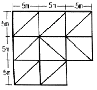
- 3.70m
- 4.70m
- 6.70m
- 9.70m
(정답률: 알수없음)
5. 두변의 거리가 90m와 100m이고 그 끼인 각이 30°인 삼각형의 면적은?
- 2250m2
- 3182m2
- 3897m2
- 4500m2
(정답률: 알수없음)
6. 완화곡선에 대한 설명 중 옳지 않은 것은?
- 완화곡선의 반지름은 완화곡선 시점에서 무한대, 종점에서 원곡선의 반지름이 된다.
- 완화곡선의 접선은 시점에서 직선에, 종점에서 원호에 접한다.
- 완화곡선에서 확폭의 크기는 곡선반지름에 비례하고 설계속도에 반비례한다.
- 완화곡선에 연한 곡선반지름의 감소율은 캔트의 증가율과 같다.
(정답률: 알수없음)
7. 종단측량과 횡단측량에 관한 설명으로 틀린 것은?
- 종단측량은 횡단측량보다 일반적으로 높은 정확도가 요구된다.
- 종단면도에서 수직축척은 수평축척보다 작게 취하는 것이 보통이지만 횡단면에서는 단면적을 계산하지 않으면 안 되므로 종횡의 축척을 같게 하지 않으면 안된다.
- 종단면도를 보면 노선의 대세를 분별하지만 횡단면도에서는 이것을 분별하기가 어렵다.
- 횡단면도에는 종단측량의 중심이 위치하게 되며, 그 성과를 토대로 절토단면적, 성토단면적을 계산한다.
(정답률: 알수없음)
8. 터널측량에 관한 설명으로 옳지 않은 것은?
- 터널 측량은 터널 외 측량과 터널 내 측량, 터널 내외 연결측량으로 나눌 수 있다.
- 터널의 길이, 방향은 삼각측량 또는 트래버스 측량으로 정한다.
- 터널 내의 수준측량은 정확도를 위해 레벨과 수준 척에 의한 직접수준측량으로만 측정한다.
- 터널 내 측량에스는 기계의 십자선, 표척눈금 등에 조명이 필요하다.
(정답률: 알수없음)
9. 하천측량에서 고저측량 과정에 관한 설명으로 틀린 것은?
- 거리표 설치 - 거리표는 하천 중심부에 부표를 이용하여 설치
- 종단측량 - 좌우 양안의 거리표 높이와 지반고 관측
- 횡단측량 - 거리표를 기준으로 그 선상의 고저측량
- 심천측량 - 하천의 수심과 하저상황조사를 통한 횡단면도 작성
(정답률: 39%)
10. 터널측량에서 지상측량의 좌표와 지하측량의 좌표를 같게 하는 측량은?
- 터널 내의 연결측량
- 지하 중심선측량
- 터널 좌표측량
- 지하 수준측량
(정답률: 알수없음)
11. 칸트(cant)의 계산에서 속도 및 반지름을 모두 2배로 할 때 칸트의 크기 변화는?
- 1/4로 감소
- 1/2로 감소
- 2배로 증가
- 4배로 증가
(정답률: 60%)
12. 가설 삼각점을 이용, 터널 입구 A와 B의 좌표를 구하여 다음의 값을 얻었다. AB의 거리는?
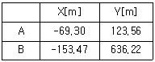
- 514.27m
- 519.52m
- 558.97m
- 563.27m
(정답률: 알수없음)
13. 노선의 중심말뚝(간격 20m)에 대한 횡단측량을 실시하여 단면적을 구한 결과, 단면1의 면적 A1=80m2, 단면2의 면적 A2=120m2이었다. 이 구간의 토량은?
- 200m2
- 800m2
- 1000m2
- 2000m2
(정답률: 알수없음)
14. 노선측량에서 우리나라의 철도에 주로 이용되는 완화곡선은?
- 2차포물선
- 렘니스케이트
- 콜로소이드
- 3차포물선
(정답률: 알수없음)
15. 하천에서 부자를 이용하여 유속을 측정하고자 할때 유하거리는 보통 얼마 정도로 하는가?
- 100~200m
- 500~1000m
- 1.2km
- 하폭의 5배 이상
(정답률: 알수없음)
16. 하천에서 수면과 하안과의 경계선을 정하는 수의는?
- 갈수위에 가까운 동시수위
- 평균최고수위
- 평균평수위에 가까운 동시수위
- 평균저수위에 가까운 동시수위
(정답률: 알수없음)
17. 노선 기정에서 400m 위치에 있는 교정(I,P)의 교각(J)이 80°인 단곡선에서 곡선반지름 A=100m인 경우, 시단면에 대한 편각은?
- 0° 5′ 44″
- 1° 7′ 12″
- 4° 36′ 34″
- 5° 43′ 46″
(정답률: 알수없음)
18. 클로소이드 공식 사이의 관계가 틀린 것은? (단, R : 곡률반지름, L : 완화곡선장, τ : 접선각, A : 매개변수)
- R · L = A2
- τ = L / 2R
- A2 = L2 / 2τ
- τ = A / 2R2
(정답률: 알수없음)
19. 수심 n인 직선의 평균유속을 구하기 위하여 수면으로부터 길이의(0.2, 0.6, 0.8)인 곳의 유속을 측정하였더니 0.55m/sec, 0.76m/sec, 0.80m/sec 이었다. 이때 산출한 평균유속은?
- 0.55m/sec
- 0.70m/sec
- 0.73m/sec
- 0.80m/sec
(정답률: 알수없음)
20. 각과 위치에 의한 경관도의 정량화에서 시설물의 한 점을 시준 할 때 시준선과 시설을 축선이 이루는 각 α는 크기에 따라 입체감에 변화를 주는데 다음 총 입체감있게 계획이 잘된 경관을 얻을 수 있는 범위로 가장 적합한 것은?
- 10° ＜ α ≤ 30°
- 30° ＜ α ≤ 50°
- 40° ＜ α ≤ 60°
- 50° ＜ α ≤ 70°
(정답률: 67%)
2과목: 사진측량 및 원격탐사
21. 항공사진의 주요 판독요소로만 짝지어진 것은?
- 색조, 크기, 촬영고도
- 질감, 모양, 촬영고도
- 형상, 색조, 날짜
- 음영, 크기, 색조
(정답률: 알수없음)
22. GIS 데이터 취득에 대한 일반적인 설명으로 옳지 않은 것은?
- 스캐닝이 디지타이징에 비하여 작업 속도가 빠르다.
- 스캐닝에 의한 수치지도 제작을 위해서는 래스터를 벡터로 변환하는 과정이 필요하다.
- 디지타이징은 전반적으로 자동화된 작업과정이므로 숙련도에 크게 좌우되지 않는다.
- 디지타이징은 손상된 도면의 입력도 가능하며 비교적 장비가 저렴하다.
(정답률: 85%)
23. 수치표고모형(DEM) 또는 불규칙삼각탐(TIN)을 이용하여 추출할 수 있는 정보가 아닌 것은?
- 경사 방향
- 등고선
- 가시도 분석
- 지표 피복 활용
(정답률: 알수없음)
24. 비고 70m의 구릉지에서 사진크기 23cm × 23cm, 초첨거리 15.3cm인 사진기로 촬영한 축적 1:20000의 면적 사진이 있다. 이 사진의 비고에 의한 최대 편위는?
- 3.7mm
- 4.7mm
- 7.3mm
- 8.3mm
(정답률: 알수없음)
25. 오차의 원인 중 사진기 자체에 의해 발생되는 것이 아닌 것은?
- 방사 렌즈 왜곡
- 대기굴절 변화
- 주장과 지표중심의 불일치
- 부정확한 초점거리
(정답률: 알수없음)
26. GIS를 사용함에 따른 특징이 아닌 것은?
- 수치데이터로 구축되어 지도 축척의 손쉬운 변환이 가능하다.
- 기존의 수작업으로 하는 작업을 컴퓨터를 이용하여 손쉽게 할 수 있다.
- GIS데이터는 CAD와 비교하여 데이터의 형식이 간편하여 손쉬운 분석이 가능하다.
- 다양한 공간적 분석이 가능하여 도시계획, 환경, 생태 등의 여러 분야에서 의사결정에 활용될 수 있다.
(정답률: 알수없음)
27. 다음 중 GIS도입의 성공 요건과 가장 거리가 먼것은?
- 데이터 입력의 효율화
- 데이터베이스의 유지관리
- 데이터의 공유
- 데이터 수집 비용의 증대
(정답률: 82%)
28. 면적 600km2 의 장방형의 토지에 대하여 축척 1:20000의 항공사진으로 종중복도 60%, 횡중복도 30%로 할 경우 사진의 매수는? (단, 사진의 크기는 23cm × 23cm이고 안전율을 20%로 한다)
- 110매
- 117매
- 120매
- 122매
(정답률: 알수없음)
29. 편위수정기에서 사진면과 렌즈 주면과 투영면의 연장이 항상 한 선에서 일치하도록 하면 투영면상의 상이 선명하게 상을 맺는다. 이것을 무슨 조건이라 하는가?
- 샤임플러그의 조건
- Newton의 렌즈 조건
- 소실점 조건
- 광학적 조건
(정답률: 알수없음)
30. GIS의 일반적인 구성요소가 아닌 것은?
- 컴퓨터 하드웨어
- 컴퓨터 소프트웨어
- 공간데이터베이스
- 메타데이터
(정답률: 알수없음)
31. 종중복도 60%, 횡중복도 30% 일 때 촬영 종기선 길이와 촬영 횡기선 길이와의 비는? (단, 사진의 크기는 23cm×23cm 이다.)
- 7 : 4
- 4 : 7
- 2 : 1
- 3 : 1
(정답률: 알수없음)
32. 항공사진은 어떤 원리에 의한 지형지물의 상인가?
- 정사투영
- 평행투영
- 중심투영
- 등적투영
(정답률: 46%)
33. 초점거리 160mm의 카메라로 해면고도 3000m의 비행기로부터 평균해면고도 1000m의 평지를 촬영한 사진의 축척은?
- 1 : 12500
- 1 : 125000
- 1 : 22500
- 1 : 225000
(정답률: 알수없음)
34. 속성자료의 주요 요소가 아닌 것은?
- 정확성
- 시간
- 인접성
- 유통성
(정답률: 알수없음)
35. 절대표정을 위한 기준점의 개수와 배치로 가장 바람직한 것은? (단, ○는 수지기준점(Z), □는 수평기준점(X,Y), △는 3차원기준점(X,Y,Z)를 의미하고, 대상지역은 거의 평면에 가깝다고 가정한다.)
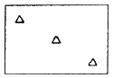
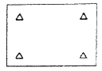
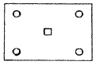
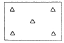
(정답률: 알수없음)
36. 공간 자료의 품질의 핵심요소 중 하나로 데이터셋의 역사를 말하면 수치 데이터셋의 경우는 다음과 같이 정의 할 수 있는 것은?
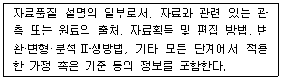
- 연혁(Lineage)
- 위치 정확도(Positional Accuracy)
- 완전성(Completeness)
- 논리적 일관성(Logical consistency)
(정답률: 알수없음)
37. 3차원(3D) GIS에 대한 설명응로 틀린 것은?
- 3차원 GIS는 3차원의 공간정보와 이를 이용한 공간분석 작업을 수행하는 기능을 제공한다.
- 3차원 데이터는 지상 표면(Surface)과 지형·지물(feature) 모델로 구분될 수 있다.
- 3차원적인 데이터 표현과 분석 작업은 현실 세계에 대한 이해를 증진 시킨다.
- 3차원 GIS는 높이 값을 갖지 않는 X, Y와 시간의 속성값을 말한다.
(정답률: 알수없음)
38. 부울논리(Boolean Logic)를 이용하여 속성과 공간적 특성에 대한 자료를 검색(검게 채색된 부분)하는 방법이 잘못 짝지어진 것은?
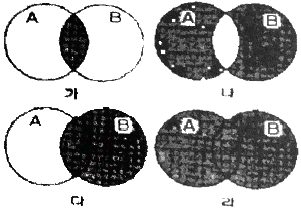
- 그림 [가] - A AND B
- 그림 [나] - A XOR B
- 그림 [다] - A NOT B
- 그림 [라] - A OR B
(정답률: 70%)
39. Pushbroom 스캐너의 특징이 아닌 것은?
- 경사관측을 통한 입체영상 취득이 용이하다.
- 순간시야각의 개념이 적용되어 넓은 지역의 관측에 용이하다.
- 각각의 라인이 중심투영인 항공사진의 기하와 유사하다.
- 한 번에 한 라인 전체를 기록한다.
(정답률: 10%)
40. 격자 형식의 GIS 데이터가 갖는 특징이 아닌 것은?
- 벡터 방식에 비하여 중첩분석이 용이하다.
- 다양한 공간분석을 할 수 있도록 위상정보를 갖고 있다.
- 자료구조가 단순하다.
- 다양한 종류의 인공위성에서 제공되는 데이터를 바로 이용할 수 있다.
(정답률: 알수없음)
3과목: GIS 및 GPS
41. 지구를 장반경이 6370km, 단반경이 6350km인 타원형이라 할 때 편평률은?
- 약 1/320
- 약 1/430
- 약 1/500
- 약 1/630
(정답률: 80%)
42. 등고선 간격이 10m일 때 경사제한을 최대 5%까지의 지형으로 개발한다면, 각 등고선 간의 최소 수평거리는?
- 100m
- 200m
- 500m
- 1000m
(정답률: 60%)
43. 방위각 계산에서 얻어진 각이 (-)인 경우에는?
- 그 각에 90°를 더한다.
- 그 각에 180°를 더한다.
- 그 각에 270°를 더한다.
- 그 각에 360°를 더한다.
(정답률: 알수없음)
44. 그림과 같이 각 측점에서의 교각을 관측하였다. 측선DC의 방위각은?
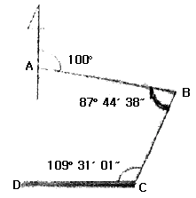
- 232° 27′ 10″
- 82° 44′ 21″
- 115° 44′ 20″
- 65° 32′ 50″
(정답률: 67%)
45. 다음 중 지성선의 종류에 속하지 않는 것은?
- 계곡선
- 능선
- 경사변환선
- 산능대지선
(정답률: 60%)
46. 트래버스측량에 대한 설명 중 틀린 것은?
- 페합트래버스측량은 한 측점에서 측량을 시작하여 차례로 각 측점을 측정하고 최후에 다시 출발점에 돌아오는 것으로 폐합다각형을 이루는 측량이다.
- 결합트래버스측량은 한 기지점에서 출발하여 다른 기지점에 연결하는 트래버스로써 삼각점과 삼각점을 연결하는 광범위한 지역에서 정밀을 요할 때 사용한다.
- 개방트래버스측량은 출발점과 도착점이 아무런 연관이 없는 측량으로 노선측량의 답사 등에 이용된다.
- 개방트래버스측량은 오차점검이 가능하면, 폐합트래버스측량보다 정도가 높다.
(정답률: 알수없음)
47. 수준측량에서 전·후시 거리를 같이 함으로써 제거할 수 없는 오차는?
- 레벨의 조정불량에 따른 오차
- 지구의 곡률에 의한 오차
- 광선의 굴절에 의한 오차
- 수준척의 읽음 오차
(정답률: 알수없음)
48. RTK-GPS에 의한 세부측량을 설명한 것으로 옳은 것은?
- RTK-GPS 관측에 의해 지형도 등의 작성에 필요한 수치데이터를 취득하는 작업을 말한다.
- RTK-GPS 관측에 의해 구조물의 변형과 변위를 관측하는 작업을 말한다.
- RTK-GPS 관측에 의해 국가기준점인 삼각점을 설치하는 작업을 말한다.
- RTK-GPS 관측에 의해 국도 변에 설치된 수준점의 타원체고를 구하는 작업을 말한다.
(정답률: 알수없음)
49. 표준자와 비교하였더니 30m에 대하여 5cm가 늘어난 줄자로 삼각형의 지역을 측정하여 삼사법으로 면적을 측정하였더니 930m2였다. 이 지역의 정확한 면적은?
- 1007.5m2
- 933.1m2
- 926.9m2
- 896.9m2
(정답률: 50%)
50. 표고 h=326.42m 인 지역에 설치한 기선의 길이가 500m 일 때 평균 해면상의 길이로 보정한 값은? (단, 지구반지름 R=6367km로 가정)
- 499.854m
- 499.974m
- 500.256m
- 500.456m
(정답률: 알수없음)
51. GPS는 인공위성을 이용한 지구위치결정체계이다. 이와 유사한 인공위성 위치결정체계가 아닌 것은?
- NAVSAT
- Galileo
- GLONASS
- SAR
(정답률: 알수없음)
52. 승강식 야장법에 대한 설명으로 틀린 것은?
- 계산에서 완전한 검사를 할 수 있다.
- 정밀한 측량에는 부적당하다.
- 중간점이 많을 때는 그 계산이 복잡하다.
- 후시에서 전시를 뺀 값이 고저차가 되므로 그 값이 (+)일 때는 승, (-)일 때는 강의 난에 기입한다.
(정답률: 알수없음)
53. GPS(범지구측위시스템)에 대한 설명 중 틀린 것은?
- 단측측위로 구한 위치는 지구중심계(WGS84)에 준거한 것으로서 우리나라 측지계에 준거한 위치를 구하기 위해서는 타원체의 변환이 필요하다.
- 정적측위는 다수의 측정에 수신기를 고정시켜서 동시에 관측하는 방식이다.
- 장거리의 기선을 관측할 경우에는 전리층의 영향을 보정할 필요가 있다.
- GPS 측양으로부터 구해진 타원체상의 높이는 수준측량에 의해서 구하여진 표고와 일치한다.
(정답률: 알수없음)
54. 그림과 같은 삼각망에서 CD의 거리는?
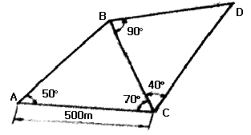
- 383.022m
- 433.013m
- 500.013m
- 577.350m
(정답률: 알수없음)
55. 어떤 각을 4명이 관측하여 다음과 같은 결과를 얻었다면 최하값은?
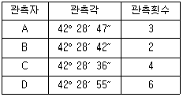
- 42° 28′ 47″
- 42° 28′ 44″
- 42° 28′ 41″
- 42° 28′ 36″
(정답률: 알수없음)
56. 그림의 측점C에서 점Q 및 점P 방향에 장매물이 있어서 시준이 불가능하여 편심거리 e만큼 떨어진 B점에서 각 T를 관측했다. 측점C에서의 측각 T'은?
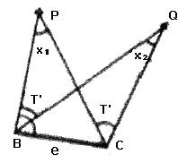
- T' = T + X1
- T' = T - X1
- T' = T - X1 + X2
- T' = T + X1 - X2
(정답률: 알수없음)
57. 각 측량의 기계적 오차 중 망원경의 정·반 위치에서 측정값을 평균해도 소거되지 않는 오차는?
- 연직축 오차
- 시준축 오차
- 수평축 오차
- 편심 오차
(정답률: 알수없음)
58. 1등 수준측량에서 2km구간을 왕복 측량한 결과 관측값의 교차가 10mm발생하였다. 이 경우 알맞은 처리 방법은?
- 허용 범위 내에 포함되므로 그대로 인정한다.
- 결과를 평균하여 고저차를 결정한다.
- 허용범위를 초과하지만 그 값이 작아 그대로 인정한다.
- 허용범위보다 크므로 다시 측량 한다.
(정답률: 60%)
59. 1:50000 지형도의 산정에서 계곡까지의 거리가 52mm이고 산정의 표고가 580m, 계곡의 표고가 60m이었다면 이 사면의 경사는?
- 1/5
- 1/4
- 1/3
- 1/2
(정답률: 55%)
60. 강철줄자에 의한 거리측량에 있어서 강철줄자의 장력에 대한 보정량 계산을 위한 요소가 아닌 것은?
- 줄자의 탄성계수
- 줄자이 단면적
- 줄자의 단위중량
- 관측시의 장력
(정답률: 알수없음)
4과목: 측량학
61. 지도도식규칙에 의해 지형도에서 지모를 표현하는 일반적인 방법으로 옳은 것은?
- 지류계
- 등고선
- 점고법
- 음영기복
(정답률: 알수없음)
62. 일반측량을 시행하는데 그 기초로 할 수 없는 자료는?
- 기본측량성과
- 일반측량성과
- 공공측량성과
- 기본측량기록
(정답률: 알수없음)
63. 측량기기의 성능검사 주기로 옳은 것은?
- 트랜싯 : 2년
- 레벨 : 4년
- 거리측정기 : 2년
- 토탈스테이션 : 3년
(정답률: 알수없음)
64. 측량업을 폐업한 경우에 측량업자는 그 사유가 발생한 날로부터 최대 몇 일 이내에 신고하여야 하는가?
- 10일
- 15일
- 20일
- 30일
(정답률: 알수없음)
65. 측량·수로 조사 및 지적에 관한 법률에서 정의한 기본측량의 정의로 옳은 것은?
- 국가, 지방자치단체, 그 밖에 대통령령으로 정하는 기관이 관계 법령에 따른 사업 등을 시행하기 위하여실시하는 측량
- 모든 측량의 기초가 되는 공간정보를 제공하기 위하여 국토해양부장관이 실시하는 측량
- 공공의 이해에 관계가 있는 측량
- 모든 소유권에 기본을 두는 측량
(정답률: 80%)
66. 1:5000 지형도의 주곡선 간격은?
- 1m
- 5m
- 10m
- 20m
(정답률: 알수없음)
67. 기본측량성과 및 공공측량성과의 고시는 최종성과를 얻은 날부터 몇 일 이내에 하여야 하는가?
- 15일
- 30일
- 45일
- 60일
(정답률: 82%)
68. 측량기술자의 자격기준과 등급에 관한 설명으로 옳지 않은 것은?
- 기술사는 특급기술자이다.
- 산업기사 자격을 취득한 사람으로서 10년 이상 측량업무를 수행한 사람은 고급기술자이다.
- 산업기사 자격을 가진 사람으로서 5년 이상 측량업무를 수행한 사람은 중급기술자이다.
- 산업기사 자격을 취득한 사람은 초급기술자이다.
(정답률: 알수없음)
69. 기본측량성과의 고시내용에 포함되지 않는 사항은?
- 측량의 종류와 정확도
- 측량의 절차와 사용원점
- 측량의 규모 및 설치한 측량기준점의 수
- 측량성과의 보관 장소와 측량실시의 시기 및 지역
(정답률: 20%)
70. 측량·수로조사 및 지적에 관한 법률의 제정목적에 대한 설명으로 가장 적합한 것은?
- 국토의 효율적 관리와 해상교통의 안전 및 국민의 소유권 보호에 기여함
- 측량 및 수로조사의 기준 및 절차를 규정함
- 측량 및 수로조사와 지적측량에 관한 규칙을 정함
- 국토개발의 중복 배제와 경비 절감에 기여함
(정답률: 알수없음)
71. 기본측량과 공공측량의 실시공고에 필수적 사항이 아닌것은?
- 측량의 종류
- 측량의 성과 보관 장소
- 측량의 목적
- 측량의 실시기간
(정답률: 알수없음)
72. 측량업의 등록을 취소하여야 하는 경우가 아닌 것은?
- 영업정지기간 중에 계속하여 영업을 한 경우
- 측량업등록증을 다른 사람에게 빌려준 경우
- 거짓이나 그 밖의 부정한 방법으로 측량업의 등록을 한 경우
- 측량업의 등록을 한 날로부터 정당한 사유 없이 계속하여 1년 이상 휴업한 경우
(정답률: 73%)
73. 다음 벌칙 규정에 대한 설명으로 옳지 않은 것은?
- 측량업자로서 속임수, 위력(威力) 그 밖의 방법으로 측량업과 관련된 입찰의 공정성을 해친 자는 3년 이하의 징역 또는 3천만원 이하의 벌금에 처한다.
- 성능검사를 부정하게 한 성능검사대행자는 2년 이하의 징역 또는 2천만원 이하의 벌금에 처한다.
- 심사를 받지 아니하고 지도등을 간행하여 판매하거나 배포한 자는 1년 이하의 징역 또는 2천만원 이하의 벌금에 처한다.
- 다른 사람에게 측량업등록증 또는 측량업등록수첩을 빌려주거나 자기의 성명 또는 상호를 사용하여 측량업무를 하게 한 자는 1년 이하의 징역 또는 1천만원 이하의 벌금에 처한다.
(정답률: 알수없음)
74. 측량·수로조사 및 지적에 관한 법률의 적용범위로서 보기의 조항에서 '다음 각 호' 에 해당되지 않는 것은?
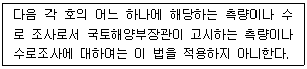
- 지적측량
- 순수 학술 연구 활동을 위한 측량
- 고도의 정확도가 필요하지 아니한 측량
- "해저광물자원 개발법" 에 따른 탐사를 위한 수로 조사
(정답률: 24%)
75. 측량성과 심사수탁기관은 공공측량성과 심사의 신청을 받은 때에는 접수일로부터 20일 이내에 심사를 하여야 한다. 다만, 특정한 경우에 통지기간을 10일의 범위에서 연장할 수 있는데, 이 특정한 경우에 해당되지 않은 것은?
- 노선 길이 600킬로미터 이상일 때
- 지하시설물도 및 수심측량의 심사량이 200킬로미터 이상일 때
- 성과심사 대상지역의 기상악화 및 천재지변 등으로 심사가 곤란할 때
- 지상현황측량, 수치지도 및 수치표고자료 등의 성 과심사량이 면적 5제곱킬로미터 이상일 때
(정답률: 55%)
76. 측량기준점 표지의 이전을 신청하려는 자는 원하는 날의 몇 일 전까지 측량기준점을 설치한 자에게 제출하여야 하는가?
- 10일
- 20일
- 30일
- 40일
(정답률: 알수없음)
77. 공공측량 작업계획서를 제출할 때 포함되지 않아도 되는 사항은?
- 공공측량의 목적 및 활용 범위
- 공공측량의 위치 및 사업량
- 공공측량의 시행자의 규모
- 사용할 측량기기의 종류 및 성능
(정답률: 알수없음)
78. 수도조사에서 간출지(刊出地)의 높이와 수심의 기준으로 옳은 것은?
- 정해진 날에 조석을 관측하여 분석한 결과 가장 낮은 해수면
- 정해진 날에 조석을 관측하여 평균한 해수면
- 일정 기간 조석을 관측하여 분석한 결과 가장 높은 해수면
- 일정 기간 조석을 관측하여 분석한 결과 가장 낮은 해수면
(정답률: 알수없음)
79. 공공측량에 관한 설명으로 옳지 않은 것은?
- 선행된 공공측량의 성과를 기초로 측량을 실시할 수 있다.
- 선행된 기본측량의 성과를 기초로 측량을 실시할 수 있다.
- 공공측량의 측량성과를 교부받고자 하는 자는 국토지리정보원장에게만 신청할 수 있다.
- 공공측량시행자는 공공측량을 하려면 미리 측량지역, 측량기간, 그 밖에 필요한 사항을 시·도지사에게 통지하여야 한다.
(정답률: 알수없음)
80. 측량업의 종류로 옳지 않은 것은?
- 지하시설물측량업
- 공간영상도화업
- 연안조사측량업
- 영상지도제작업
(정답률: 알수없음)